SpringBoot
springboot集成Redis和Dubbo跳过
Spring官网：Spring | Home
文档地址：Spring Boot Reference Documentation
api地址：Overview (Spring Boot 2.7.18 API)
第一章 JavaConfig
为什么要使用 Spring Boot
因为Spring， SpringMVC 需要使用的大量的配置文件 （xml文件）
还需要配置各种对象，把使用的对象放入到spring容器中才能使用对象
需要了解其他框架配置规则。
SpringBoot 就相当于 不需要配置文件的Spring+SpringMVC。 常用的框架和第三方库都已经配置好了。
拿来就可以使用了。
SpringBoot开发效率高，使用方便多了
1.1 JavaConfig（Spring）
JavaConfig: 使用java类作为xml配置文件的替代， 是配置spring容器的纯java的方式。 在这个java类这可以创建java对象，把对象放入spring容器中（注入到容器），
使用两个注解：
1）@Configuration ： 放在一个类的上面，表示这个类是作为配置文件使用的。
2）@Bean：声明对象，把对象注入到容器中。
x1例子：2package com.bjpowernode.config;3
4import com.bjpowernode.vo.Student;5import org.springframework.context.annotation.Bean;6import org.springframework.context.annotation.Configuration;7
8/**9 * Configuration:表示当前类是作为配置文件使用的。 就是用来配置容器的10 * 位置：在类的上面11 *12 * SpringConfig这个类就相当于beans.xml13 */14public class SpringConfig {16
17 /**18 * 创建方法，方法的返回值是对象。 在方法的上面加入@Bean19 * 方法的返回值对象就注入到容器中。20 *21 * @Bean: 把对象注入到spring容器中。 作用相当于<bean>22 *23 * 位置：方法的上面24 *25 * 说明：@Bean,不指定对象的名称，默认是方法名是 id26 *27 */28 29 public Student createStudent(){30 Student s1 = new Student();31 s1.setName("张三");32 s1.setAge(26);33 s1.setSex("男");34 return s1;35 }36
37
38 /***39 * 指定对象在容器中的名称（指定<bean>的id属性）40 * @Bean的name属性，指定对象的名称（id）41 */42 (name = "lisiStudent")43 public Student makeStudent(){44 Student s2 = new Student();45 s2.setName("李四");46 s2.setAge(22);47 s2.setSex("男");48 return s2;49 }50}51
1.2 @ImporResource
@ImportResource 作用导入其他的xml配置文件， 等于 在xml
xxxxxxxxxx11<import resources="其他配置文件"/>
例如：
xxxxxxxxxx41(value ={ "classpath:applicationContext.xml","classpath:beans.xml"})3public class SpringConfig {4}
1.3 @PropertySource
@PropertyResource: 读取properties属性配置文件。 使用属性配置文件可以实现外部化配置 ，
在程序代码之外提供数据。
步骤：
在resources目录下，创建properties文件， 使用k=v的格式提供数据
在PropertySource 指定properties文件的位置
使用@Value（value="${key}"）
xxxxxxxxxx61(value ={ "classpath:applicationContext.xml","classpath:beans.xml"})3(value = "classpath:config.properties")4(basePackages = "com.bjpowernode.vo")5public class SpringConfig {6}
第二章 Spring Boot入门
2.1 介绍
SpringBoot是Spring中的一个成员， 可以简化Spring，SpringMVC的使用。 他的核心还是IOC容器。
特点：
Create stand-alone Spring applications
创建spring应用
Embed Tomcat, Jetty or Undertow directly (no need to deploy WAR files)
内嵌的tomcat， jetty ， Undertow
Provide opinionated 'starter' dependencies to simplify your build configuration
提供了starter起步依赖，简化应用的配置。
比如使用MyBatis框架 ， 需要在Spring项目中，配置MyBatis的对象 SqlSessionFactory ， Dao的代理对象
在SpringBoot项目中，在pom.xml里面, 加入一个 mybatis-spring-boot-starter依赖
Automatically configure Spring and 3rd party libraries whenever possible
尽可能去配置spring和第三方库。叫做自动配置（就是把spring中的，第三方库中的对象都创建好，放到容器中， 开发人员可以直接使用）
Provide production-ready features such as metrics, health checks, and externalized configuration
提供了健康检查， 统计，外部化配置
Absolutely no code generation and no requirement for XML configuration
不用生成代码， 不用使用xml，做配置
2.2 创建Spring Boot项目
2.2.1 第一种方式， 使用Spring提供的初始化器， 就是向导创建SpringBoot应用
使用的地址： https://start.spring.io
包名取前两个
SpringBoot项目的结构：
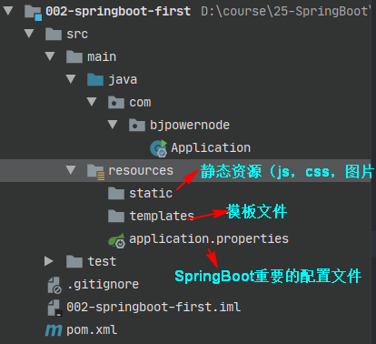
这些是跟maven有关的，没有maven会帮你下载相关的文件，可以删除
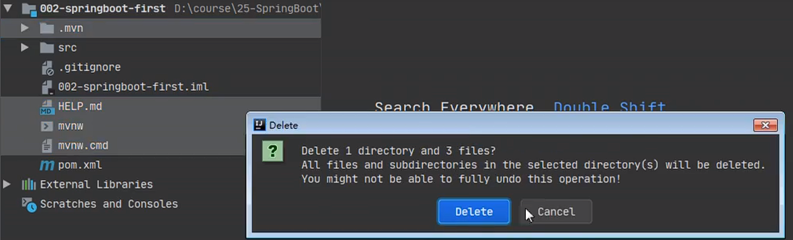
2.2.2 使用国内的地址
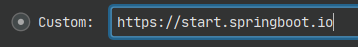
2.2.3使用maven构建
new module
引入springboot父项目
加起步依赖
第一个webApp
构建好项目（springboot-005-mvc）
写一个Rest风格的controller类
点击小箭头跑起来或者添加service
细节：
默认端口和项目名是8080 /
主程序的main来启动web应用
2.3 主程序注解的使用
@SpringBootConfiguration
xxxxxxxxxx191//主程序上的注解2复合注解：由3//这个注解上有@Configuration4//很复杂5 7 8
9 10public @interface SpringBootConfiguration {12 (13 annotation = Configuration.class14 )15 boolean proxyBeanMethods() default true;16}17
18说明：使用了注解标注的类，可以作为配置文件使用的，19 可以使用Bean声明对象，注入到容器
@EnableAutoConfiguration
启用自动配置， 把java对象配置好，注入到spring容器中。例如可以把mybatis的对象创建好，放入到容器中
@ComponentScan
xxxxxxxxxx31 扫描器，找到注解，根据注解的功能创建对象，给属性赋值等等。2默认扫描的包： 所在的类所在的包和子包。3细节：默认规则是Application放在主包，这样就可以扫描其他的类了
2.4 SpringBoot的配置文件
配置文件名称： application 不能改必须这么叫
扩展名有： properties( k=v) ; yml ( k: v)
使用application.properties, application.yml
例1：application.properties设置 端口和上下文
xxxxxxxxxx51#设置端口号2server.port=80823#设置访问应用上下文路径， contextpath4server.servlet.context-path=/myboot5
例2： application.yml
xxxxxxxxxx41server2 port80833 servlet4 context-path/myboot2
2.5 多环境配置
有开发环境， 测试环境， 上线的环境。
每个环境有不同的配置信息， 例如端口， 上下文件， 数据库url，用户名，密码等等
使用多环境配置文件，可以方便的切换不同的配置。
使用方式： 创建多个配置文件， 名称规则： application-环境名称.properties(yml)
创建开发环境的配置文件： application-dev.properties( application-dev.yml )
创建测试者使用的配置： application-test.properties
例如
写多几个开发环境配置 application-dev.yml | application-test.yml
在application.yml中配置spring.profiles.active=dev
2.6 使用@ConfigurationProperties
@ConfigurationProperties: 把配置文件的数据映射为java对象。
属性：prefix 配置文件中的某些key的开头的内容。
xxxxxxxxxx451(prefix = "school")3public class SchoolInfo {4
5 private String name;//school.name的值就会被注入到name属性中6
7 private String website;8
9 private String address;10
11
12 public String getName() {13 return name;14 }15
16 public void setName(String name) {17 this.name = name;18 }19
20 public String getWebsite() {21 return website;22 }23
24 public void setWebsite(String website) {25 this.website = website;26 }27
28 public String getAddress() {29 return address;30 }31
32 public void setAddress(String address) {33 this.address = address;34 }35
36 37 public String toString() {38 return "SchoolInfo{" +39 "name='" + name + '\'' +40 ", website='" + website + '\'' +41 ", address='" + address + '\'' +42 '}';43 }44}45
写要映射的pojo对象@Component和@ConfigurationProperties(prefix="keyPrefix")
在要用的地方@Resource 先根据变量名字自动装配，然后在判断类型进行装配
映射的类爆红, 是因为你用了ConfigurationProperties, 但是idea没有找到School的元数据
不影响使用, 如果想解决需要引入一个依赖
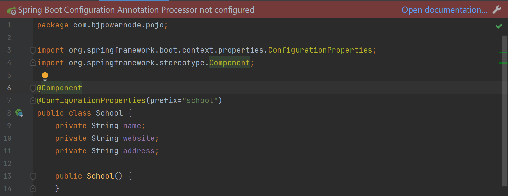
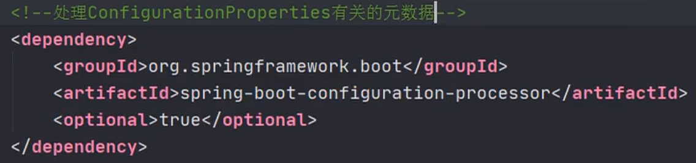
写/读取配置文件自定义/非自定义数据
application.properties
xxxxxxxxxx111#配置端口号2server.port=80823#context-path4server.servlet.context-path=/myboot5
6#自定义key=value7school.name=动力节点8school.website=www.bjpowernode.com9school.address=北京的大兴区10
11site=www.bjpowernode.comapplication.yml
xxxxxxxxxx121#配置端口和上下文路径2server3 port80804 servlet5 context-path/myboot6
7#配置自定义数据8sitewwww.baidu.com9school10 name动力节点11 websitewww.bjpowernode.com12 address北京的大兴区在配置文件写自定义数据
在需要的地方@Value("${key}")注入给属性
2.7 使用jsp
SpringBoot不推荐使用jsp ，而是使用模板技术代替jsp
使用jsp需要配置：
1） 加入一个处理jsp的依赖。 负责编译jsp文件
xxxxxxxxxx41<dependency>2 <groupId>org.apache.tomcat.embed</groupId>3 <artifactId>tomcat-embed-jasper</artifactId>4</dependency>
如果需要使用servlet， jsp，jstl的功能
xxxxxxxxxx161<dependency>2 <groupId>javax.servlet</groupId>3 <artifactId>jstl</artifactId>4</dependency>5
6<dependency>7 <groupId>javax.servlet</groupId>8 <artifactId>javax.servlet-api</artifactId>9</dependency>10
11<dependency>12<groupId>javax.servlet.jsp</groupId>13 <artifactId>javax.servlet.jsp-api</artifactId>14 <version>2.3.1</version>15</dependency>16
创建一个存放jsp的目录，一般叫做webapp
index.jsp
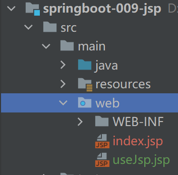
默认是没有蓝点的,需要在 项目结构 模块下web里面去配置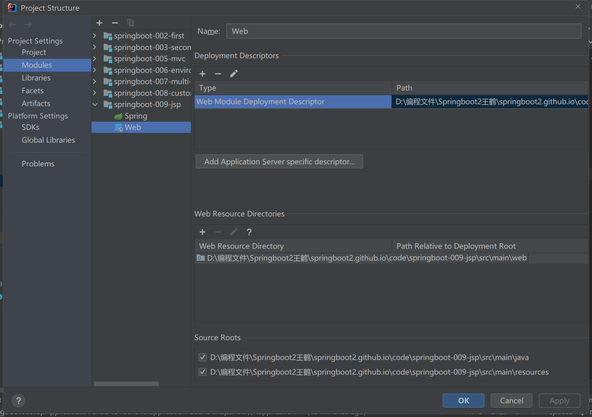
需要在pom.xml指定jsp文件编译后的存放目录。
META-INF/resources
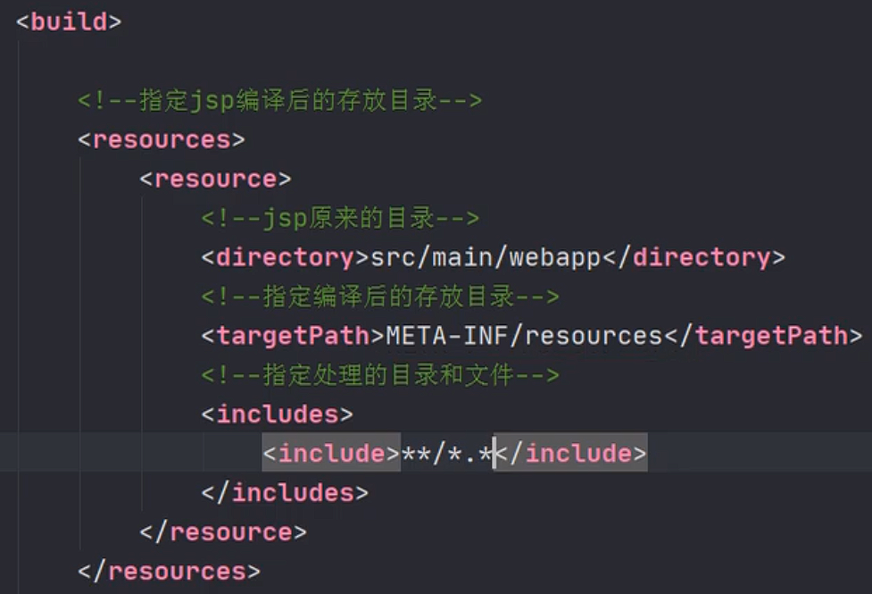
5）创建Controller， 访问jsp
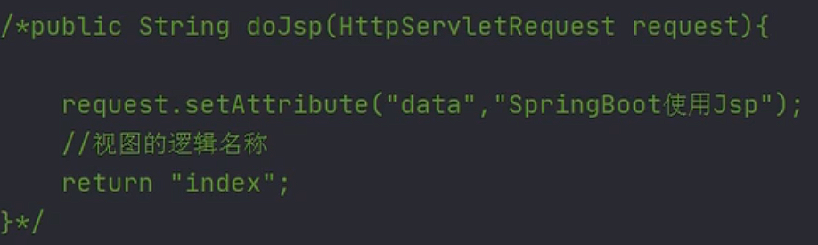
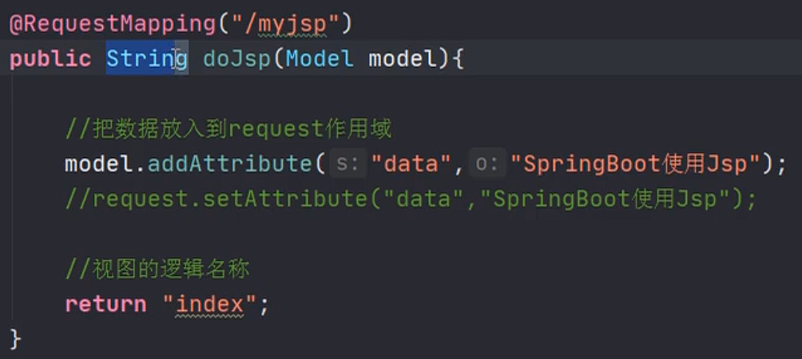
6）在application.propertis文件中配置视图解析器
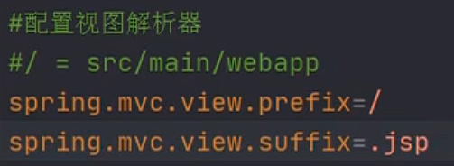
当我去尝试添加框架支持时, 写好controller被请求后, 跳转到jsp页面,但是没有反应
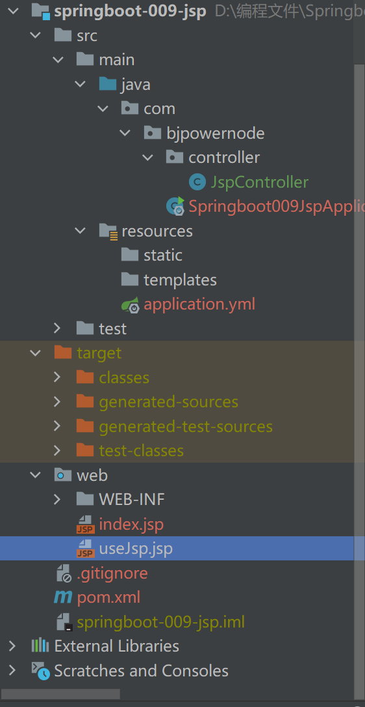
因为你是通过SpringBoot框架的主程序启动的, 而我的操作是配置tomcat服务器; 冲突了, 我到底是把springboot容器放到tomcat服务器, 还是springboot存放tomcat
2.8 使用容器
你想通过代码，从容器中获取对象。
通过SpringApplication.run(Application.class, args); 返回值获取容器。
xxxxxxxxxx61public static ConfigurableApplicationContext run(Class<?> primarySource, String... args) {2 return run(new Class[]{primarySource}, args);3}4
5ConfigurableApplicationContext : 接口，是ApplicationContext的子接口6public interface ConfigurableApplicationContext extends ApplicationContext
在主程序内注入对象到容器
xxxxxxxxxx141/**2 * 因为@SpringBootApplication这个注解, 有@SpringBootConfiguration注解3 * 因为@SpringBootConfiguration注解, 有@Configuration注解4 *5 * 因为@Configuration是可以用在JavaConfig中的, 用来代替spring.xml文件6 * 所以可以在这个@SpringBootApplication类中去创建Bean,并且放入到容器中7 *8 * bean的id默认是方法名, 或者通过@Bean name|value属性指定名字9 * @return10 */11("userServiceByBean")12public UserService makeUserService(){13 return new UserServiceImpl();14}写好的类你要用@Service("name") 或者使用@Bean例如上面所示
在主程序用ApplicationContext 接收 SpringApplication.run(Application.class, args)
ac.getBean("beanId", Class<?>)
2.9 使用ComnandLineRunner 接口 ， ApplcationRunner接口
这两个接口都 有一个run方法。 执行时间在容器对象创建好后， 自动执行run（）方法。
可以完成自定义的在容器对象创建好的一些操作。
xxxxxxxxxx91public interface CommandLineRunner {3 void run(String... args) throws Exception;4}5
6public interface ApplicationRunner {8 void run(ApplicationArguments args) throws Exception;9}主程序类去实现这两个之一的接口
主程序类重写接口的run方法
第三章 Web组件
讲三个内容： 拦截器， Servlet ，Filter
3.1 拦截器
拦截器是SpringMVC中一种对象，能拦截器对Controller的请求。
拦截器框架中有系统的拦截器， 还可以自定义拦截器。 实现对请求预先处理。
实现自定义拦截器：
创建类实现SpringMVC框架的HandlerInterceptor接口
xxxxxxxxxx111public interface HandlerInterceptor {2default boolean preHandle(HttpServletRequest request, HttpServletResponse response, Object handler) throws Exception {3return true;4}56default void postHandle(HttpServletRequest request, HttpServletResponse response, Object handler, ModelAndView modelAndView) throws Exception {7}89default void afterCompletion(HttpServletRequest request, HttpServletResponse response, Object handler, Exception ex) throws Exception {10}11}
2.需在SpringMVC的配置文件中，声明拦截器
xxxxxxxxxx61<mvc:interceptors>2 <mvc:interceptor>3 <mvc:path="url" />4 <bean class="拦截器类全限定名称"/>5 </mvc:interceptor>6</mvc:interceptors>
SpringBoot中注册拦截器：
xxxxxxxxxx201public class MyAppConfig implements WebMvcConfigurer {3
4 //添加拦截器对象， 注入到容器中5 6 public void addInterceptors(InterceptorRegistry registry) {7
8 //创建拦截器对象9 HandlerInterceptor interceptor = new LoginInterceptor();10
11 //指定拦截的请求uri地址12 String path []= {"/user/**"};13 //指定不拦截的地址14 String excludePath [] = {"/user/login"};15 registry.addInterceptor(interceptor)16 .addPathPatterns(path)17 .excludePathPatterns(excludePath);18
19 }20}写一个拦截器实现一个接口 HandlerInterceptor
写一个配置类实现一个接口 WebMvcConfigurer 并加上@Configuration注解
实现addInterceptors方法, 写拦截规则
3.2 Servlet
模块: springboot-13-servlet
我没有去写这个案例
在SpringBoot框架中使用Servlet对象。
使用步骤：
创建Servlet类。 创建类继承HttpServlet
注册Servlet ，让框架能找到Servlet
例子：
创建自定义Servlet
xxxxxxxxxx181//创建Servlet类2public class MyServlet extends HttpServlet {3 4 protected void doGet(HttpServletRequest req, HttpServletResponse resp) throws ServletException, IOException {5 doPost(req,resp);6 }7
8 9 protected void doPost(HttpServletRequest req, HttpServletResponse resp) throws ServletException, IOException {10 //使用HttpServletResponse输出数据，应答结果11 resp.setContentType("text/html;charset=utf-8");12 PrintWriter out = resp.getWriter();13 out.println("===执行的是Servlet==");14 out.flush();15 out.close();16
17 }18}
注册Servlet
xxxxxxxxxx221public class WebApplictionConfig {3
4 //定义方法， 注册Servlet对象5 6 public ServletRegistrationBean servletRegistrationBean(){7
8 //public ServletRegistrationBean(T servlet, String... urlMappings)9 //第一个参数是 Servlet对象， 第二个是url地址10
11 //ServletRegistrationBean bean =12 //new ServletRegistrationBean( new MyServlet(),"/myservlet");13
14
15 ServletRegistrationBean bean = new ServletRegistrationBean();16 bean.setServlet( new MyServlet());17 bean.addUrlMappings("/login","/test"); // <url-pattern>18
19
20 return bean;21 }22}写一个servlet 继承 HttpServlet
写一个配置类@Configuration + ServletRegistrationBean的构造方法 然后@Bean返回这个对象
3.3 过滤器Filter
模块: springboot-14-filter
我也没有去写这个案例
Filter是Servlet规范中的过滤器，可以处理请求， 对请求的参数， 属性进行调整。 常常在过滤器中处理字符编码
在框架中使用过滤器：
创建自定义过滤器类
注册Filter过滤器对象
例子：
创建自定义过滤器类
xxxxxxxxxx81// 自定义过滤器2public class MyFilter implements Filter {3 4 public void doFilter(ServletRequest servletRequest, ServletResponse servletResponse, FilterChain filterChain) throws IOException, ServletException {5 System.out.println("执行了MyFilter，doFilter ");6 filterChain.doFilter(servletRequest,servletResponse);7 }8}
注册Filter过滤器对象
xxxxxxxxxx111public class WebApplicationConfig {3
4 5 public FilterRegistrationBean filterRegistrationBean(){6 FilterRegistrationBean bean = new FilterRegistrationBean();7 bean.setFilter(new MyFilter());8 bean.addUrlPatterns("/user/*");9 return bean;10 }11}写一个自定义过滤器实现接口Filter + 重写doFilter()方法
filterChain.doFilter(servletRequest,servletResponse);不能少!
写一个配置类@Configuration + FilterRegistrationBean的setXxx方法 然后@Bean返回这个对象
3.4 字符集过滤器
CharacterEncodingFilter : 解决post请求中乱码的问题
在SpringMVC框架， 在web.xml 注册过滤器。 配置他的属性。
第一种方式：
模块: springboot-15-character-filter
我也没有去写这个案例
使用步骤：
配置字符集过滤器
xxxxxxxxxx3212public class WebSystemConfig {34//注册Servlet56public ServletRegistrationBean servletRegistrationBean(){7MyServlet myServlet = new MyServlet();8ServletRegistrationBean reg = new ServletRegistrationBean(myServlet,"/myservlet");9return reg;10}111213//注册Filter1415public FilterRegistrationBean filterRegistrationBean(){16FilterRegistrationBean reg = new FilterRegistrationBean();1718//使用框架中的过滤器类19CharacterEncodingFilter filter = new CharacterEncodingFilter();20//指定使用的编码方式21filter.setEncoding("utf-8");22//指定request ， response都使用encoding的值23filter.setForceEncoding(true);2425reg.setFilter(filter);26//指定 过滤的url地址27reg.addUrlPatterns("/*");282930return reg;31}32}修改application.properties文件， 让自定义的过滤器起作用
xxxxxxxxxx31#SpringBoot中默认已经配置了CharacterEncodingFilter。 编码默认ISO-8859-12#设置enabled=false 作用是关闭系统中配置好的过滤器， 使用自定义的CharacterEncodingFilter3server.servlet.encoding.enabled=false
第二种方式
模块: springboot-16-character-properties
我也没有去写这个案例
修改application.properties文件
xxxxxxxxxx91server.port=90012server.servlet.context-path=/myboot3
4#让系统的CharacterEncdoingFilter生效, 默认是true5server.servlet.encoding.enabled=true6#指定使用的编码方式7server.servlet.encoding.charset=utf-88#强制request，response都使用charset属性的值9server.servlet.encoding.force=true注意: springboot3使用的内嵌tomcat是10的版本, 默认使用utf-8.
所以只设置force=true也行
第四章 ORM 操作 MySQL
环境准备:
建库: springboot_db
建表
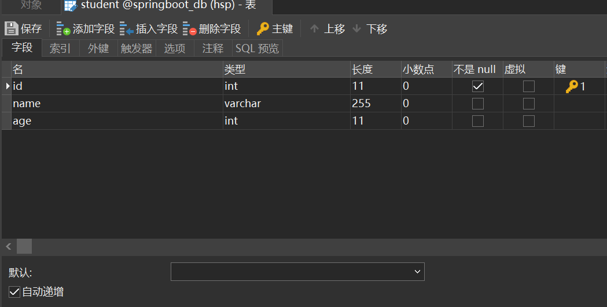
使用MyBatis框架操作数据， 在SpringBoot框架集成MyBatis
使用步骤：
mybatis起步依赖 ： 完成mybatis对象自动配置， 对象放在容器中
pom.xml 指定把src/main/java目录中的xml文件包含到classpath中
创建实体类Student
创建Dao接口 StudentDao , 创建一个查询学生的方法
创建Dao接口对应的Mapper文件， xml文件， 写sql语句
创建Service层对象， 创建StudentService接口和他的实现类。 去dao对象的方法。完成数据库的操作
创建Controller对象，访问Service。
写application.properties文件
配置数据库的连接信息。
第一种方式 ： @Mapper
@Mapper：放在dao接口的上面， 每个接口都需要使用这个注解。
xxxxxxxxxx91/**2 * @Mapper：告诉MyBatis这是dao接口，创建此接口的代理对象。3 * 位置：在类的上面4 */5public interface StudentDao {7
8 Student selectById(("stuId") Integer id);9}
第二种方式 @MapperScan
xxxxxxxxxx81/**2 * @MapperScan: 找到Dao接口和Mapper文件3 * basePackages：Dao接口所在的包名4 */5(basePackages = {"com.bjpowernode.dao","com.bjpowernode.mapper"})7public class Application {8}
第三种方式： Mapper文件和Dao接口分开管理
现在把Mapper文件放在resources目录下
1）在resources目录中创建子目录 （自定义的） ， 例如mapper
2）把mapper文件放到 mapper目录中
3）在application.properties文件中，指定mapper文件的目录
xxxxxxxxxx41#指定mapper文件的位置2mybatis.mapper-locations=classpath:mapper/*.xml3#指定mybatis的日志4mybatis.configuration.log-impl=org.apache.ibatis.logging.stdout.StdOutImpl在pom.xml中指定 把resources目录中的文件 ， 编译到目标目录中
xxxxxxxxxx91<!--resources插件-->2<resources>3 <resource>4 <directory>src/main/resources</directory>5 <includes>6 <include>**/*.*</include>7 </includes>8 </resource>9</resources>
第四个 事务
Spring框架中的事务：
1） 管理事务的对象： 事务管理器（接口， 接口有很多的实现类）
例如：使用Jdbc或mybatis访问数据库，使用的事务管理器：DataSourceTransactionManager
2 ) 声明式事务： 在xml配置文件或者使用注解说明事务控制的内容
控制事务： 隔离级别，传播行为， 超时时间
3）事务处理方式：
1） Spring框架中的@Transactional
2) aspectj框架可以在xml配置文件中，声明事务控制的内容
SpringBoot中使用事务： 上面的两种方式都可以。
1）在业务方法的上面加入@Transactional , 加入注解后，方法有事务功能了。
2）明确的在 主启动类的上面 ，加入@EnableTransactionManager
例子：
xxxxxxxxxx171/**2 * @Transactional: 表示方法的有事务支持3 * 默认：使用库的隔离级别， REQUIRED 传播行为； 超时时间 -14 * 抛出运行时异常，回滚事务5 */6public int addStudent(Student student) {9 System.out.println("业务方法addStudent");10 int rows = studentDao.insert(student);11 System.out.println("执行sql语句");12
13 //抛出一个运行时异常， 目的是回滚事务14 //int m = 10 / 0 ;15
16 return rows;17}
第五章 接口架构风格 —RESTful
接口： API（Application Programming Interface，应用程序接口）是一些预先定义的接口（如函数、HTTP接口），或指软件系统不同组成部分衔接的约定。 用来提供应用程序与开发人员基于某软件或硬件得以访问的一组例程，而又无需访问源码，或理解内部工作机制的细节。
接口（API）： 可以指访问servlet， controller的url， 调用其他程序的 函数
架构风格： api组织方式（样子）
就是一个传统的： http://localhost:9002/mytrans/addStudent?name=lisi&age=26
在地址上提供了 访问的资源名称addStudent, 在其后使用了get方式传递参数。
5.1 REST
RESTful架构风格
1)REST : （英文： Representational State Transfer , 中文： 表现层状态转移)。
REST：是一种接口的架构风格和设计的理念，不是标准。
优点： 更简洁，更有层次
表现层状态转移:
表现层就是视图层， 显示资源的， 通过视图页面，jsp等等显示操作资源的结果。
状态： 资源变化
转移： 资源可以变化的。 资源能创建，new状态， 资源创建后可以查询资源， 能看到资源的内容，
这个资源内容 ，可以被修改， 修改后资源 和之前的不一样。
2）REST中的要素：
用REST表示资源和对资源的操作。 在互联网中，表示一个资源或者一个操作。
资源使用url表示的， 在互联网， 使用的图片，视频， 文本，网页等等都是资源。
资源是用名词表示。
对资源：
查询资源： 看，通过url找到资源。
创建资源： 添加资源
更新资源：更新资源 ，编辑
删除资源： 去除
资源使用url表示，通过名词表示资源。
在url中，使用名词表示资源， 以及访问资源的信息, 在url中，使用“ / " 分隔对资源的信息
http://localhost:8080/myboot/student/1001
使用http中的动作（请求方式）， 表示对资源的操作（CURD）
GET: 查询资源 -- sql select
处理单个资源： 用他的单数方式
http://localhost:8080/myboot/student/1001
http://localhost:8080/myboot/student/1001/1
处理多个资源：使用复数形式
http://localhost:8080/myboot/students/1001/1002
POST: 创建资源 -- sql insert
http://localhost:8080/myboot/student
在post请求中传递数据
xxxxxxxxxx41<form action="http://localhost:8080/myboot/student" method="post">2 姓名：<input type="text" name="name" />3 年龄：<input type="text" name="age" />4 </form>PUT： 更新资源 -- sql update
xxxxxxxxxx51<form action="http://localhost:8080/myboot/student/1" method="post">2 姓名：<input type="text" name="name" />3 年龄：<input type="text" name="age" />4 <input type="hidden" name="_method" value="PUT" />5 </form>
DELETE: 删除资源 -- sql delete
xxxxxxxxxx11```xml
删除1的数据 ```
需要的分页， 排序等参数，依然放在 url的后面， 例如
http://localhost:8080/myboot/students?page=1&pageSize=20
`
3） 一句话说明REST：
使用url表示资源 ，使用http动作操作资源。
注解
@PathVariable : 从url中获取数据
@GetMapping: 支持的get请求方式， 等同于 @RequestMapping( method=RequestMethod.GET)
@PostMapping: 支持post请求方式 ，等同于 @RequestMapping( method=RequestMethod.POST)
@PutMapping: 支持put请求方式， 等同于 @RequestMapping( method=RequestMethod.PUT)
@DeleteMapping: 支持delete请求方式， 等同于 @RequestMapping( method=RequestMethod.DELETE)
@RestController: 符合注解， 是@Controller 和@ResponseBody组合。
在类的上面使用@RestController ， 表示当前类者的所有方法都加入了 @ResponseBody
Postman : 测试工具
使用Postman : 可以测试 get ，post ， put ，delete 等请求
5.2 在页面中或者ajax中，支持put，delete请求
在SpringMVC中 有一个过滤器， 支持post请求转为put ,delete
过滤器： org.springframework.web.filter.HiddenHttpMethodFilter
作用： 把请求中的post请求转为 put ， delete
实现步骤：
application.properties(yml) : 开启使用 HiddenHttpMethodFilter 过滤器
在请求页面中，包含 _method参数， 他的值是 put， delete ， 发起这个请求使用的post方式
第六章 Redis
Redis ： 一个NoSQL数据库， 常用作 缓存使用 （cache）
Redis的数据类型： string , hash ,set ,zset , list
Redis是一个中间件： 是一个独立的服务器。
java中著名的客户端： Jedis ， lettuce ， Redisson
Spring,SpringBoot中有 一个RedisTemplate（StringRedisTemplate） ，处理和redis交互
6.1 配置Windows版本的redis
Redis-x64-3.2.100.rar 解压缩到一个 非中文 的目录
redis-server.exe：服务端， 启动后，不要关闭
redis-cli.exe：客户端， 访问redis中的数据
redisclient-win32.x86_64.2.0.jar : Redis图形界面客户端
执行方式： 在这个文件所在的目录， 执行 java -jar redisclient-win32.x86_64.2.0.jar
RedisTemplate 使用的 lettuce 客户端库
xxxxxxxxxx101<!--redis起步依赖： 直接在项目中使用RedisTemplate(StringRedisTemplate)-->2<dependency>3 <groupId>org.springframework.boot</groupId>4 <artifactId>spring-boot-starter-data-redis</artifactId>5</dependency>6data-redis使用的 lettuce 客户端库7
8在程序中使用RedisTemplate类的方法 操作redis数据， 实际就是调用的lettuce 客户端的中的方法9
10
6.2 对比 StringRedisTemplate 和 RedisTemplate
StringRedisTemplate ： 把k，v 都是作为String处理， 使用的是String的序列化 ， 可读性好
RedisTemplate ： 把k，v 经过了序列化存到redis。 k，v 是序列化的内容， 不能直接识别.
默认使用的jdk序列化， 可以修改为前提的序列化
序列化：把对象转化为可传输的字节序列过程称为序列化。
反序列化：把字节序列还原为对象的过程称为反序列化。
为什么需要序列化
序列化最终的目的是为了对象可以跨平台存储，和进行网络传输。而我们进行跨平台存储和网络传输的方式就是IO，而我们的IO支持的数据格式就是字节数组。我们必须在把对象转成字节数组的时候就制定一种规则（序列化），那么我们从IO流里面读出数据的时候再以这种规则把对象还原回来（反序列化）。
什么情况下需要序列化
通过上面我想你已经知道了凡是需要进行“跨平台存储”和”网络传输”的数据，都需要进行序列化。
本质上存储和网络传输 都需要经过 把一个对象状态保存成一种跨平台识别的字节格式，然后其他的平台才可以通过字节信息解析还原对象信息。
序列化的方式
序列化只是一种拆装组装对象的规则，那么这种规则肯定也可能有多种多样，比如现在常见的序列化方式有：
JDK（不支持跨语言）、JSON、XML、Hessian、Kryo（不支持跨语言）、Thrift、Protofbuff、
Student( name=zs, age=20) ---- { "name":"zs", "age":20 }
java的序列化： 把java对象转为byte[], 二进制数据
json序列化：json序列化功能将对象转换为 JSON 格式或从 JSON 格式转换对象。例如把一个Student对象转换为JSON字符串{"name":"李四", "age":29} )，反序列化(将JSON字符串 {"name":"李四", "age":29} 转换为Student对象)
设置key或者value的序列化方式
xxxxxxxxxx81// 使用RedisTemplate ，在存取值之前，设置序列化2// 设置 key 使用String的序列化3redisTemplate.setKeySerializer( new StringRedisSerializer());4
5// 设置 value 的序列化6redisTemplate.setValueSerializer( new StringRedisSerializer());7
8redisTemplate.opsForValue().set(k,v);
第七章 SpringBoot集成Dubbo
7.1 看 SpringBoot继承Dubbo的文档
https://github.com/apache/dubbo-spring-boot-project/blob/master/README_CN.md
7.2 公共项目
独立的maven项目： 定义了接口和数据类
xxxxxxxxxx131public class Student implements Serializable {2 private static final long serialVersionUID = 1901229007746699151L;3
4 private Integer id;5 private String name;6 private Integer age;7}8
9public interface StudentService {10
11 Student queryStudent(Integer id);12}13
7.3 提供者
创建SpringBoot项目
1） pom.xml
xxxxxxxxxx321<dependencies>2
3 <!--加入公共项目的gav-->4 <dependency>5 <groupId>com.bjpowernode</groupId>6 <artifactId>022-interface-api</artifactId>7 <version>1.0.0</version>8 </dependency>9
10 <!--dubbo依赖-->11 <dependency>12 <groupId>org.apache.dubbo</groupId>13 <artifactId>dubbo-spring-boot-starter</artifactId>14 <version>2.7.8</version>15 </dependency>16
17
18 <!--zookeeper依赖-->19 <dependency>20 <groupId>org.apache.dubbo</groupId>21 <artifactId>dubbo-dependencies-zookeeper</artifactId>22 <version>2.7.8</version>23 <type>pom</type>24 <exclusions>25 <!-- 排除log4j依赖 -->26 <exclusion>27 <artifactId>slf4j-log4j12</artifactId>28 <groupId>org.slf4j</groupId>29 </exclusion>30 </exclusions>31 </dependency>32</dependencies>
2）实现接口
xxxxxxxxxx221/**2 * 使用dubbo中的注解暴露服务3 * @Component 可以不用加4 */5(interfaceClass = StudentService.class,version = "1.0",timeout = 5000)6public class StudentServiceImpl implements StudentService {7 8 public Student queryStudent(Integer id) {9 Student student = new Student();10 if( 1001 == id){11 student.setId(1001);12 student.setName("------1001-张三");13 student.setAge(20);14 } else if(1002 == id){15 student.setId(1002);16 student.setName("#######1002-李四");17 student.setAge(22);18 }19
20 return student;21 }22}
3）application.properties
xxxxxxxxxx121#配置服务名称 dubbo:application name="名称"2spring.application.name=studentservice-provider3
4#配置扫描的包， 扫描的@DubboService5dubbo.scan.base-packages=com.bjpowernode.service6
7#配置dubbo协议8#dubbo.protocol.name=dubbo9#dubbo.protocol.port=2088110
11#注册中心12dubbo.registry.address=zookeeper://localhost:2181
4)在启动类的上面
xxxxxxxxxx81public class ProviderApplication {4
5 public static void main(String[] args) {6 SpringApplication.run(ProviderApplication.class, args);7 }8}
7.4消费者
创建SpringBoot项目
1） pom.xml
xxxxxxxxxx321<dependencies>2
3 <!--加入公共项目的gav-->4 <dependency>5 <groupId>com.bjpowernode</groupId>6 <artifactId>022-interface-api</artifactId>7 <version>1.0.0</version>8 </dependency>9
10 <!--dubbo依赖-->11 <dependency>12 <groupId>org.apache.dubbo</groupId>13 <artifactId>dubbo-spring-boot-starter</artifactId>14 <version>2.7.8</version>15 </dependency>16
17
18 <!--zookeeper依赖-->19 <dependency>20 <groupId>org.apache.dubbo</groupId>21 <artifactId>dubbo-dependencies-zookeeper</artifactId>22 <version>2.7.8</version>23 <type>pom</type>24 <exclusions>25 <!-- 排除log4j依赖 -->26 <exclusion>27 <artifactId>slf4j-log4j12</artifactId>28 <groupId>org.slf4j</groupId>29 </exclusion>30 </exclusions>31 </dependency>32</dependencies>创建了Controller 或者 Service都可以
xxxxxxxxxx201public class DubboController {3
4 /**5 * 引用远程服务， 把创建好的代理对象，注入给studentService6 */7 //@DubboReference(interfaceClass = StudentService.class,version = "1.0")8
9 /**10 * 没有使用interfaceClass，默认的就是 引用类型的 数据类型11 */12 (version = "1.0")13 private StudentService studentService;14
15 ("/query")16 public String queryStudent(Integer id){17 Student student = studentService.queryStudent(id);18 return "调用远程接口，获取对象："+student;19 }20}
3）application.properties
xxxxxxxxxx41#指定服务名称2spring.application.name=consumer-application3#指定注册中心4dubbo.registry.address=zookeeper://localhost:2181
7.5 练习
使用的技术： SpringBoot ,Dubbo, Redis, MyBatis
Student表：

CREATE TABLE student (
id int(11) NOT NULL AUTO_INCREMENT,
name varchar(255) COLLATE utf8_bin DEFAULT NULL,
phone varchar(11) COLLATE utf8_bin DEFAULT NULL,
age int(11) DEFAULT NULL,
PRIMARY KEY (id)
) ENGINE=InnoDB AUTO_INCREMENT=6 DEFAULT CHARSET=utf8 COLLATE=utf8_bin;
注册学生
phone必须唯一， 如果已经存在了手机号， 注册失败的。
int addStudent(Student student);
返回值：int
1： 注册成功
2 ： 手机号已经存在
name至少两个字符，
age 必须 大于 0
2） 查询学生，根据id查询，此学生。
先到redis查询学生， 如果redis没有此学生，从数据库查询， 把查询到的学生放入到redis。
后面再次查询这个学生应该从redis就能获取到。
Student queryStudent(Integer id);
使用Dubbo框架， addStudent, queryStudent 是有服务提供者实现的。
消费者可以是一个Controller ， 调用提供者的两个方法。 实现注册和查询。
4）页面使用html和ajax，jquery。
在html页面中提供 form 注册学生， 提供文本框输入id，进行查询。
注册和查询都使用ajax技术。
html，jquery.js都放到resources/static目录中
第八章 打包
8.1 打包war
1.创建了一个jsp应用
2.修改pom.xml
1)指定打包后的文件名称
xxxxxxxxxx41<build>2 <!--打包后的文件名称-->3 <finalName>myboot</finalName>4</build>
2)指定jsp编译目录
xxxxxxxxxx261<!--resources插件， 把jsp编译到指定的目录-->2<resources>3 <resource>4 <directory>src/main/webapp</directory>5 <targetPath>META-INF/resources</targetPath>6 <includes>7 <include>**/*.*</include>8 </includes>9 </resource>10
11 <!--使用了mybatis ，而且mapper文件放在src/main/java目录-->12 <resource>13 <directory>src/main/java</directory>14 <includes>15 <include>**/*.xml</include>16 </includes>17 </resource>18
19 <!--把src/main/resources下面的所有文件，都包含到classes目录-->20 <resource>21 <directory>src/main/resources</directory>22 <includes>23 <include>**/*.*</include>24 </includes>25 </resource>26</resources>
3）执行打包是war
xxxxxxxxxx21<!--打包类型-->2<packaging>war</packaging>
4）主启动类继承SpringBootServletInitializer
xxxxxxxxxx151/**2 * SpringBootServletInitializer: 继承这个类， 才能使用独立tomcat服务器3 */4public class JspApplication extends SpringBootServletInitializer {6
7 public static void main(String[] args) {8 SpringApplication.run(JspApplication.class, args);9 }10
11 12 protected SpringApplicationBuilder configure(SpringApplicationBuilder builder) {13 return builder.sources(JspApplication.class);14 }15}
5）部署war
把war放到tomcat等服务器的发布目录中。 tomcat为例， myboot.war放到tomcat/webapps目录。
8.2 打包为jar
1.创建了一个包含了jsp的项目
2.修改pom.xml
1) 指定打包后的文件名称
xxxxxxxxxx41<build>2 <!--打包后的文件名称-->3 <finalName>myboot</finalName>4</build>
指定springboot-maven-plugin版本
xxxxxxxxxx81<plugins>2 <plugin>3 <groupId>org.springframework.boot</groupId>4 <artifactId>spring-boot-maven-plugin</artifactId>5 <!--打包jar， 有jsp文件时，必须指定maven-plugin插件的版本是 1.4.2.RELEASE-->6 <version>1.4.2.RELEASE</version>7 </plugin>8</plugins>
3）最后执行 maven clean package
在target目录中，生成jar 文件， 例子是myboot.jar
执行独立的springboot项目 在cmd中 java -jar myboot.jar
第九章 Thymeleaf 模板引擎
Thymeleaf： 是使用java开发的模板技术， 在服务器端运行。 把处理后的数据发送给浏览器。
模板是作视图层工作的。 显示数据的。 Thymeleaf是基于Html语言。 Thymleaf语法是应用在
html标签中 。 SpringBoot框架集成Thymealeaf, 使用Thymeleaf代替jsp。
Thymeleaf 的官方网站：http://www.thymeleaf.org Thymeleaf 官方手册：https://www.thymeleaf.org/doc/tutorials/3.0/usingthymeleaf.html
9.1 表达式
标准变量表达式
语法： ${key}
作用： 获取key对于的文本数据， key 是request作用域中的key ， 使用request.setAttribute(), model.addAttribute()
在页面中的 html标签中， 使用 th:text="${key}"
xxxxxxxxxx111<div style="margin-left: 400px">2 <h3>标准变量表达式: ${key}</h3>3 <p th:text="${site}">key不存在</p>4 <br/>5 <p>获取SysUser对象 属性值</p>6 <p th:text="${myuser.id}">id</p>7 <p th:text="${myuser.name}">姓名</p>8 <p th:text="${myuser.sex}">姓名：m男</p>9 <p th:text="${myuser.age}">年龄</p>10 <p th:text="${myuser.getName()}">获取姓名使用getXXX</p>11</div>
选择变量表达式（ 星号变量表达式）
语法： *{key}
作用： 获取这个key对应的数据， *{key}需要和th:object 这个属性一起使用。
目的是简单获取对象的属性值。
xxxxxxxxxx101<p>使用 *{} 获取SysUser的属性值</p>2<div th:object="${myuser}">3<p th:text="*{id}"></p>4<p th:text="*{name}"></p>5<p th:text="*{sex}"></p>6<p th:text="*{age}"></p>78</div>9<p>使用*{}完成的表示 对象的属性值</p>10<p th:text="*{myuser.name}" ></p>链接表达式
语法： @{url}
作用： 表示链接， 可以
xxxxxxxxxx11<script src="..."> , <link href="..."> <a href=".."> ,<form action="..."> <img src="...">
9.2 Thymeleaf属性
属性是放在html元素中的，就是html元素的属性，加入了th前缀。 属性的作用不变。 加入上th， 属性的值由模板引擎处理了。 在属性可以使用变量表达式
例如：
xxxxxxxxxx31<form action="/loginServlet" method="post"></form>2
3<form th:action="/loginServlet" th:method="${methodAttr}"></form>
9.3 each
each循环， 可以循环List，Array
语法：
在一个html标签中，使用th:each
xxxxxxxxxx71<div th:each="集合循环成员,循环的状态变量:${key}">2 <p th:text="${集合循环成员}" ></p>3</div>4
5集合循环成员,循环的状态变量:两个名称都是自定义的。 “循环的状态变量”这个名称可以不定义，默认是"集合循环成员Stat"6
7
each循环Map
在一个html标签中，使用th:each
xxxxxxxxxx101<div th:each="集合循环成员,循环的状态变量:${key}">2 <p th:text="${集合循环成员.key}" ></p>3 <p th:text="${集合循环成员.value}" ></p>4</div>5
6集合循环成员,循环的状态变量:两个名称都是自定义的。 “循环的状态变量”这个名称可以不定义，默认是"集合循环成员Stat"7
8key:map集合中的key9value：map集合key对应的value值10
9.4 th:if
"th:if" : 判断语句， 当条件为true， 显示html标签体内， 反之不显示 没有else语句
xxxxxxxxxx31语法：2<div th:if=" 10 > 0 "> 显示文本内容 </div>3
还有一个 th:unless 和 th:if相反的行为
xxxxxxxxxx21语法：2<div th:unless=" 10 < 0 "> 当条件为false显示标签体内容 </div>
例子：if
xxxxxxxxxx111<div style="margin-left: 400px">2 <h3> if 使用</h3>3 <p th:if="${sex=='m'}">性别是男</p>4 <p th:if="${isLogin}">已经登录系统</p>5 <p th:if="${age > 20}">年龄大于20</p>6 <!--""空字符是true-->7 <p th:if="${name}">name是“”</p>8 <!--null是false-->9 <p th:if="${isOld}"> isOld是null</p>10 </div>11
例子： unless
xxxxxxxxxx61 <div style="margin-left: 400px">2 <h3>unless: 判断条件为false，显示标签体内容</h3>3 <p th:unless="${sex=='f'}">性别是男的</p>4 <p th:unless="${isLogin}">登录系统</p>5 <p th:unless="${isOld}"> isOld是null </p>6 </div>
9.5 th:switch
th:switch 和 java中的swith一样的
xxxxxxxxxx141语法：2<div th:switch="要比对的值">3 <p th:case="值1">4 结果15 </p>6 <p th:case="值2">7 结果28 </p>9 <p th:case="*">10 默认结果11 </p>12 以上的case只有一个语句执行13 14</div>
9.6 th:inline
内联text： 在html标签外，获取表达式的值
语法：
xxxxxxxxxx141<p>显示姓名是：[[${key}]]</p>23<div style="margin-left: 400px">4<h3>内联 text, 使用内联表达式显示变量的值</h3>5<div th:inline="text">6<p>我是[[${name}]]，年龄是[[${age}]]</p>7我是<span th:text="${name}"></span>,年龄是<span th:text="${age}"></span>8</div>910<div>11<p>使用内联text</p>12<p>我是[[${name}]],性别是[[${sex}]]</p>13</div>14</div>内联javascript
xxxxxxxxxx111例子：2 <script type="text/javascript" th:inline="javascript">3 var myname = [[${name}]];4 var myage = [[${age}]];5
6 //alert("获取的模板中数据 "+ myname + ","+myage)7
8 function fun(){9 alert("单击事件，获取数据 "+ myname + ","+ [[${sex}]])10 }11 </script>
9.7 字面量
例子：
xxxxxxxxxx131 <div style="margin-left: 400px">2 <h3>文本字面量: 使用单引号括起来的字符串</h3>3 <p th:text="'我是'+${name}+',我所在的城市'+${city}">数据显示</p>4
5 <h3>数字字面量</h3>6 <p th:if="${20>5}"> 20大于 5</p>7
8 <h3>boolean字面量</h3>9 <p th:if="${isLogin == true}">用户已经登录系统</p>10
11 <h3>null字面量</h3>12 <p th:if="${myuser != null}">有myuser数据</p>13 </div>
9.8 字符串连接
连接字符串有两种语法
1） 语法使用 单引号括起来字符串 ， 使用 + 连接其他的 字符串或者表达式
xxxxxxxxxx11 <p th:text="'我是'+${name}+',我所在的城市'+${city}">数据显示</p>2）语法：使用双竖线， |字符串和表达式|
xxxxxxxxxx31<p th:text="|我是${name},我所在城市${city|">2 显示数据3</p>
例子：
xxxxxxxxxx81 <div style="margin-left: 400px">2 <h3>字符串连接方式1：使用单引号括起来的字符串</h3>3 <p th:text="'我是'+${name}+',我所在的城市'+${city}">数据显示</p>4 <br/>5 <br/>6 <h3>字符串连接方式2：|字符串和表达式|</h3>7 <p th:text="|我是${name},所在城市${city},其他人${myuser.name}|"></p>8 </div>
9.9 运算符
xxxxxxxxxx231算术运 算： + , - - , * , / , %2关系比较 : > , < , >= , <= ( gt , lt , ge , le )3相等判断： == , != ( eq , ne )4
5
6<div style="margin-left: 400px">7 <h3>使用运算符</h3>8 <p th:text="${age > 10}">年龄大于 10 </p>9 <p th:text="${ 20 + 30 }">显示运算结果</p>10 <p th:if="${myuser == null}">myuser是null</p>11 <p th:if="${myuser eq null}">myuser是null</p>12 <p th:if="${myuser ne null}">myuser不是null</p>13
14 <p th:text="${isLogin == true ? '用户已经登录' : '用户需要登录'}"></p>15 <p th:text="${isLogin == true ? ( age > 10 ? '用户是大于10的' : '用户年龄比较小') : '用户需要登录'}"></p>16
17 </div>18
19三元运算符：20 表达式 ？ true的结果 : false的结果21
22三元运算符可以嵌套23
9.10 内置对象
#request 表示 HttpServletRequest
#session 表示 HttpSession对象
session 表示Map对象的， 是#session的简单表示方式， 用来获取session中指定的key的值
#session.getAttribute("loginname") == session.loginname
这些是内置对象，可以在模板文件中直接使用。
xxxxxxxxxx181例子：2 <div style="margin-left: 350px">3 <h3>内置对象#request,#session，session的使用</h3>4 <p>获取作用域中的数据</p>5 <p th:text="${#request.getAttribute('requestData')}"></p>6 <p th:text="${#session.getAttribute('sessionData')}"></p>7 <p th:text="${session.loginname}"></p>8
9 <br/>10 <br/>11 <h3>使用内置对象的方法</h3>12 getRequestURL=<span th:text="${#request.getRequestURL()}"></span><br/>13 getRequestURI=<span th:text="${#request.getRequestURI()}"></span><br/>14 getQueryString=<span th:text="${#request.getQueryString()}"></span><br/>15 getContextPath=<span th:text="${#request.getContextPath()}"></span><br/>16 getServerName=<span th:text="${#request.getServerName()}"></span><br/>17 getServerPort=<span th:text="${#request.getServerPort()}"></span><br/>18</div>
9.11 内置工具类
内置工具类型： Thymeleaf自己的一些类，提供对string， date ，集合的一些处理方法
#dates: 处理日器的工具类
#numbers:处理数字的
#lists: 处理list集合的
xxxxxxxxxx371<div style="margin-left: 350px">2 <h3>日期类对象 #dates</h3>3 <p th:text="${#dates.format(mydate )}"></p>4 <p th:text="${#dates.format(mydate,'yyyy-MM-dd')}"></p>5 <p th:text="${#dates.format(mydate,'yyyy-MM-dd HH:mm:ss')}"></p>6 <p th:text="${#dates.year(mydate)}"></p>7 <p th:text="${#dates.month(mydate)}"></p>8 <p th:text="${#dates.monthName(mydate)}"></p>9 <p th:text="${#dates.createNow()}"></p>10 <br/>11
12 <h3>内置工具类#numbers，操作数字的</h3>13 <p th:text="${#numbers.formatCurrency(mynum)}"></p>14 <p th:text="${#numbers.formatDecimal(mynum,5,2)}"></p>15
16 <br/>17 <h3>内置工具类#strings,操作字符串</h3>18 <p th:text="${#strings.toUpperCase(mystr)}"></p>19 <p th:text="${#strings.indexOf(mystr,'power')}"></p>20 <p th:text="${#strings.substring(mystr,2,5)}"></p>21 <p th:text="${#strings.substring(mystr,2)}"></p>22 <p th:text="${#strings.concat(mystr,'---java开发的黄埔军校---')}"></p>23 <p th:text="${#strings.length(mystr)}"></p>24 <p th:text="${#strings.length('hello')}"></p>25 <p th:unless="${#strings.isEmpty(mystr)}"> mystring 不是 空字符串 </p>26
27 <br/>28 <h3>内置工具类#lists,操作list集合</h3>29 <p th:text="${#lists.size(mylist)}"></p>30 <p th:if="${#lists.contains(mylist,'a')}">有成员a</p>31 <p th:if="!${#lists.isEmpty(mylist)}"> list 集合有多个成员</p>32
33 <br/>34 <h3>处理null</h3>35 <p th:text="${zoo?.dog?.name}"></p>36
37 </div>
9.12 自定义模板
模板是内容复用， 定义一次，在其他的模板文件中多次使用。
模板使用：
1.定义模板
2.使用模板
模板定义语法：
xxxxxxxxxx111th:fragment="模板自定义名称"2
3例如：4<div th:fragment="head">5 <p>6 动力节点-java开发7 </p>8 <p>9 www.bjpowernode.com10 </p>11</div>
引用模板语法：
xxxxxxxxxx811) ~{templatename :: selector}2 templatename: 文件名称3 selector： 自定义模板名称42）templatename :: selector5 templatename: 文件名称6 selector： 自定义模板名称7
8对于使用模板：有包含模板（th:include）， 插入模板(th:insert)
第十章 总结
10.1 注解
Spring + SpringMVC + SpringBoot
xxxxxxxxxx701创建对象的：2: 放在类的上面，创建控制器对象，注入到容器中3: 放在类的上面，创建控制器对象，注入到容器中。4 作用：复合注解是 , , 使用这个注解类的，里面的控制器方法的返回值 都是数据5
6 ： 放在业务层的实现类上面，创建service对象，注入到容器7 : 放在dao层的实现类上面，创建dao对象，放入到容器。 没有使用这个注解，是因为现在使用MyBatis框 架， dao对象是MyBatis通过代理生成的。 不需要使用、 所以没有使用。8: 放在类的上面，创建此类的对象，放入到容器中。 9
10赋值的：11 ： 简单类型的赋值， 例如 在属性的上面使用("李四") private String name12 还可以使用,获取配置文件者的数据（properties或yml）。 13 ("${server.port}") private Integer port14
15: 引用类型赋值自动注入的，支持byName, byType. 默认是byType 。 放在属性的上面，也可以放在构造 方法的上面。 推荐是放在构造方法的上面16: 给引用类型赋值，使用byName方式。 17 , 都是Spring框架提供的。18
19 ： 来自jdk中的定义， javax.annotation。 实现引用类型的自动注入， 支持byName, byType.20 默认是byName, 如果byName失败， 再使用byType注入。 在属性上面使用21
22
23其他：24 ： 放在类的上面，表示这是个配置类，相当于xml配置文件25
26：放在方法的上面， 把方法的返回值对象，注入到spring容器中。27
28 ： 加载其他的xml配置文件， 把文件中的对象注入到spring容器中29
30 ： 读取其他的properties属性配置文件31
32： 扫描器 ，指定包名，扫描注解的33
34: 放在方法的上面，表示方法的返回值是数据， 不是视图35 : 把请求体中的数据，读取出来， 转为java对象使用。36
37: 控制器增强， 放在类的上面， 表示此类提供了方法，可以对controller增强功能。38
39 : 处理异常的，放在方法的上面40
41 : 处理事务的， 放在service实现类的public方法上面， 表示此方法有事务42
43
44SpringBoot中使用的注解45 46 ： 放在启动类上面， 包含了47 ， 48
49
50 51MyBatis相关的注解52
53 ： 放在类的上面 ， 让MyBatis找到接口， 创建他的代理对象 54 :放在主类的上面 ， 指定扫描的包， 把这个包中的所有接口都创建代理对象。 对象注入到容器中55 ： 放在dao接口的方法的形参前面， 作为命名参数使用的。56 57Dubbo注解58: 在提供者端使用的，暴露服务的， 放在接口的实现类上面59: 在消费者端使用的， 引用远程服务， 放在属性上面使用。60 : 放在主类上面， 表示当前引用启用Dubbo功能。61 62 63 64 65 66
67
68 69
70